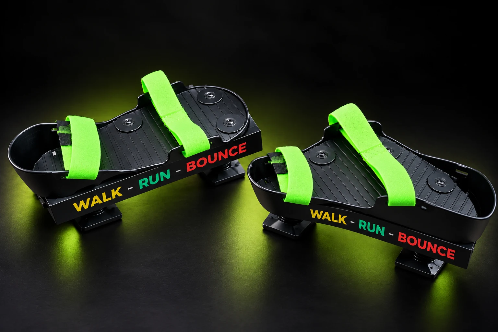

01
01FOR ACTIVE PLAY / PROTOTYPE VISUALISATION
BOUNCE
A bounce-focused attachment concept for kids aged 7–18, built around fun, movement and outdoor play.
A new shoe attachment designed to bring cushioned movement and vertical bounce to everyday play.

A DIFFERENT FEEL UNDERFOOT
Sprung-Go sits beneath your shoes, adding a responsive platform for bouncing and moving. Its footprint is designed to stay within a standard shoe outline.
The current attachment is a working prototype. Its design allows vertical footplate movement and a natural heel-to-toe walking motion.
See where we're headed
A compact footprint, a cushioned step and a whole new way to play.
We are developing the platform for different ways to move. These are product directions, with design and manufacturing work still ahead.
01A bounce-focused attachment concept for kids aged 7–18, built around fun, movement and outdoor play.
 02
02An early walk/run prototype with a black strap-fastened upper and cushioned platform beneath. A more integrated design is planned.
Our current aluminium prototype is a starting point. We are exploring lighter production materials, adjustable spring response and a refined look for the next stage.
Sprung-Go is seeking manufacturers and distributors in Australia and internationally to help develop and bring the product to market.
Let's talk possibilities

MANUFACTURERS & DISTRIBUTORS
Interested in developing Sprung-Go or bringing it to your market? Tell us about your company and the opportunity you see.